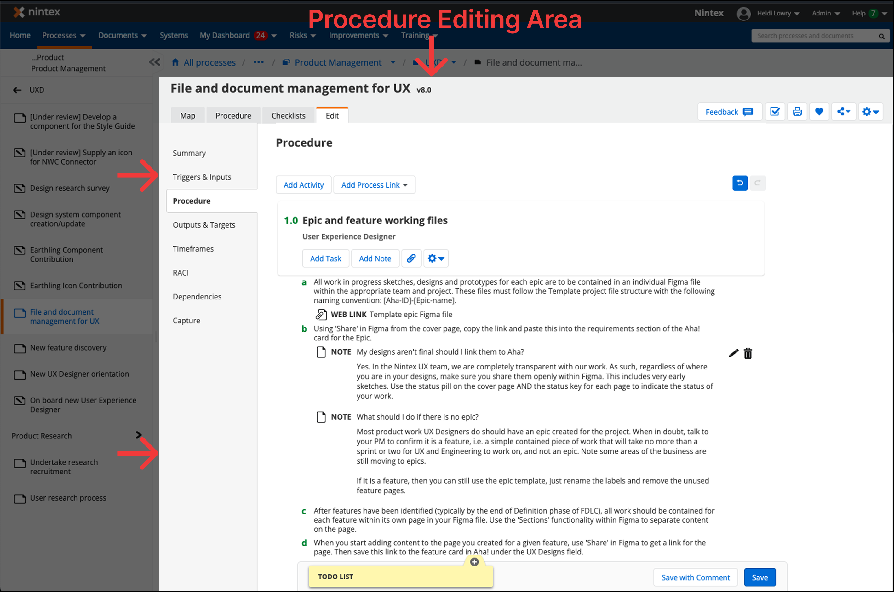
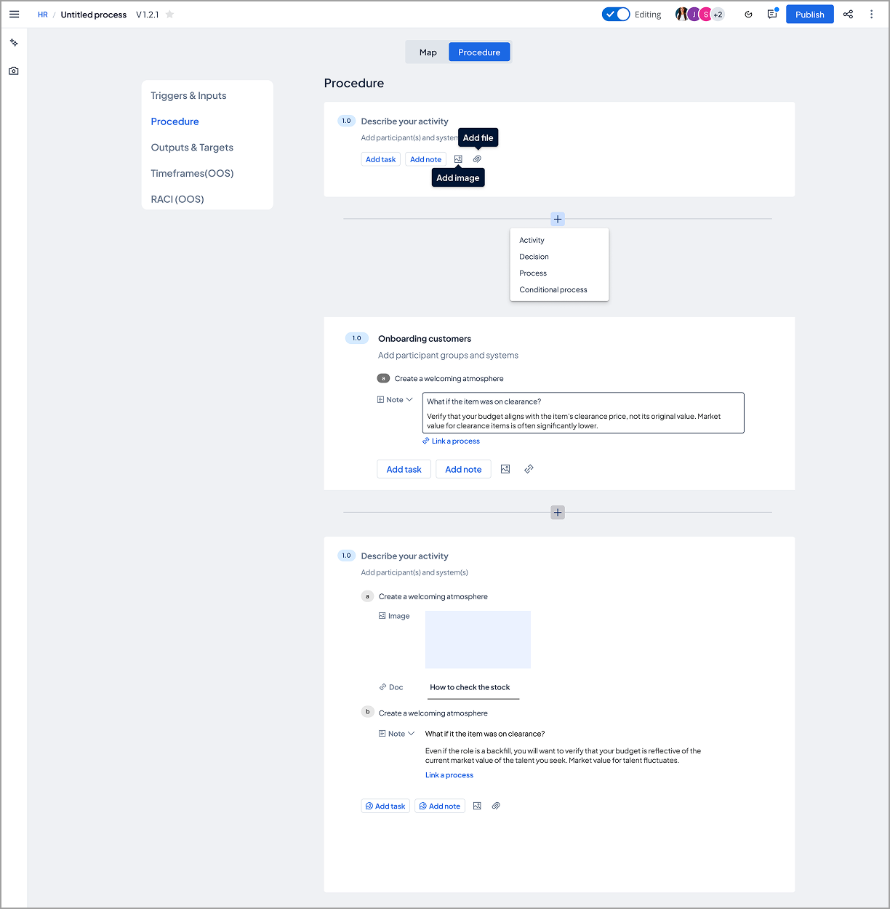
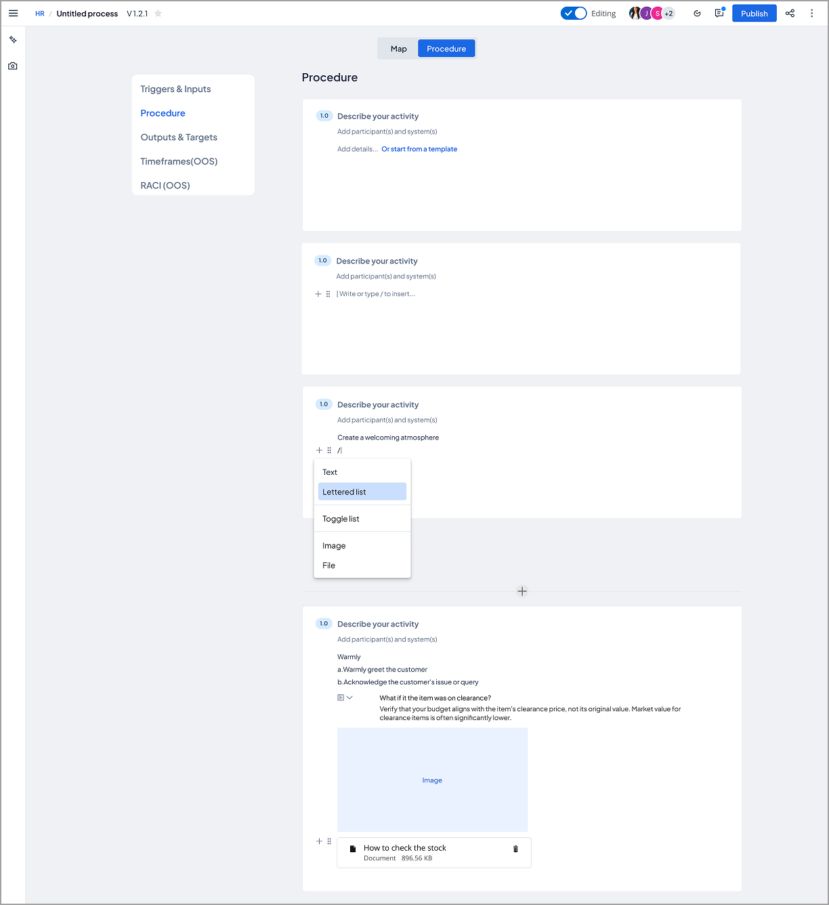
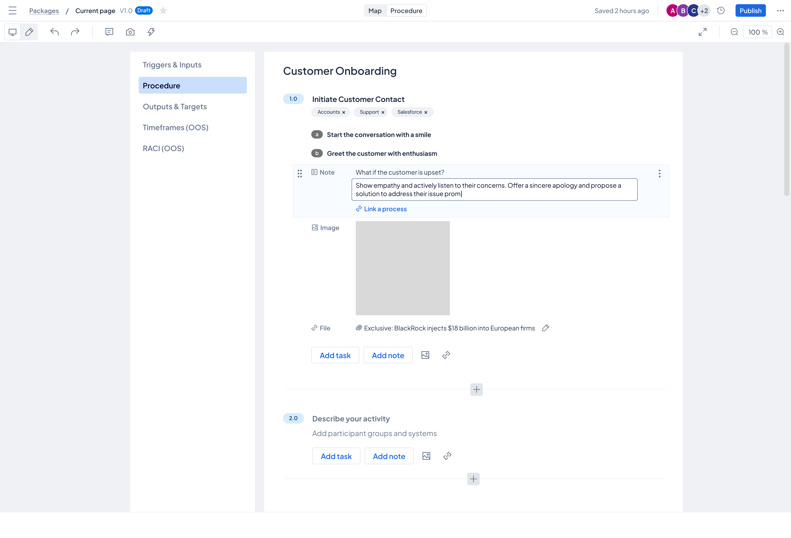

Developing senior designers through systematic visual design analysis and strategic decision-making
Product Challenge: Our procedure editing interface was outdated — bloated UI, unclear hierarchy between activity and task content, and interaction patterns that felt dated compared to modern tools.
Development Opportunity: I had a talented mid-level designer ready for senior-level work. Rather than designing the solution myself, I used this modernization project as a coaching opportunity to develop her craft evaluation skills and strategic thinking.

Original interface: Outdated visual design, bloated UI with excessive options, and unclear hierarchy between activity-level and task-level content
Problems to Solve:
Instead of directing the designer toward a specific solution, I taught her to evaluate design options systematically using three lenses.
How I Structure a Coaching Engagement
I watch how the designer approaches the problem before offering any guidance — understanding their instincts helps me know where to push.
I introduce a structured way of looking at the work — visual hierarchy, interaction patterns, user impact — so critique becomes systematic, not subjective.
I create space for the designer to generate and compare directions, coaching them to articulate the tradeoffs rather than just picking a favorite.
We pressure-test every option against who it serves well and who it disadvantages — turning design decisions into user advocacy.
After choices are made, I help the designer name what they learned and how they'd apply it next time. This is where the skill actually sticks.
The Three Evaluation Lenses
The designer explored two fundamentally different approaches. I coached her to create a systematic comparison that would help stakeholders understand the tradeoffs.
Option 1: Prescriptive, Structured Approach

Prescriptive approach: Explicit controls and guidance with visible structure and clear boundaries
User Impact: This approach serves conservative users transitioning from legacy systems and new users who need scaffolding. However, power users who want to work quickly may find the structure adds friction, and teams with simple documentation needs may feel it's over-engineered.
Option 2: Flexible, Free-Form Approach

Flexible approach: Less exposed structure with more flexible editing experience, interaction pattern similar to Notion
User Impact: This approach serves new customers familiar with modern editing tools and users who want to document quickly without friction. However, users expecting explicit process structure may struggle, and anyone without prior exposure to slash-command interfaces will face a completely hidden functionality crisis.
The team chose Option 1 (prescriptive approach) because our existing user base expected explicit process structure and we needed to minimize change resistance during the modernization.
I coached the designer to collaborate with our design system team to align similar interaction patterns across platform capabilities — work the design system team ultimately picked up to ensure consistency. We continued iterating on the procedure view design, building on the evaluation strengths we had already identified.

Final procedure view: Refined through iteration, incorporating evaluation learnings and aligned with platform design system patterns
Coaching Moment: Rather than viewing this as "handing off" work to another team, I coached the designer to see the design system team's involvement as validation that our patterns were valuable enough to scale across the platform. This is exactly the kind of strategic collaboration senior designers need to recognize and leverage.
Simultaneously, we shifted focus to designing a complementary map view visualization. After consulting with engineering, we learned the map view presented bigger technical unknowns that needed deeper exploration.
The designer is currently iterating on the map view approach through user testing with our target user group, applying the same systematic evaluation framework we established during the initial comparison.
"The best way to develop senior-level designers is to teach them how to think systematically about design decisions, not just execute solutions."
On coaching through craft: The best way to develop senior-level designers is to teach them how to think systematically about design decisions, not just execute solutions. By creating evaluation frameworks together, I helped this designer build lasting analytical skills she now applies to every project.
On developing judgment, not just taste: The side-by-side comparison forced explicit discussion of tradeoffs — which is exactly the kind of thinking senior designers need to demonstrate. Visual design isn't just about what looks good; it's about understanding why certain approaches serve certain users better than others.
On strategic collaboration: When the design system team picked up our interaction patterns, I coached the designer to view this as success, not loss of ownership. Learning to recognize when your work scales beyond your immediate project is a critical senior-level insight.
Most importantly: This designer's promotion wasn't because she executed my vision — it was because she developed her own systematic approach to design evaluation that she'll carry throughout her career. That's the real measure of successful coaching.